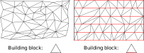
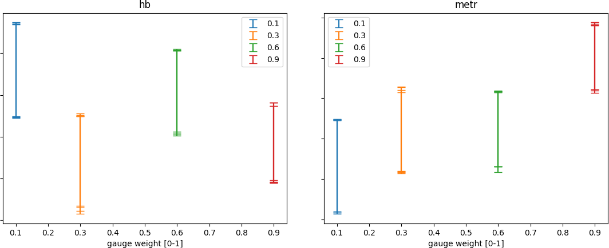
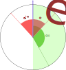
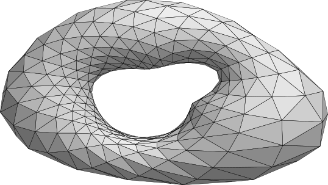

Simplicial Quantum Gravity
with
Dynamical Gauge Fields
Alessandro Candido
Supervisor: Massimo D'Elia
Overview

Asymptotic |


Causal Dynamical |

Gauge Fields |

Simulations' |
Conclusion |
Asymptotic Safety
QFT failure for Quantum
Gravity
The classical theory of gravity is known:
But trying to quantize it as a QFT leads to unabsorbable divergences, because the theory is non-renormalizable Goroff and Sagnotti, ’t Hooft and Veltman.
Something more is needed ⟶
Effective Theories
and Renormalization Group
A useful point of view on QFT is that of Effective Theories.

Reducing the number of the degrees of freedom (RG transformation) a new theory is obtained, with the same dynamics for the shared ones.
Fixed Points
of RG flow
In QFT the RG transformations have an exact definition in the language of the path integral:
If a sufficient number of terms are taking into account, the action of the RG can be interpreted as a flow in the space of couplings.
A theory invariant under RG transformations is a fixed point.
Fixed Points
of RG flow

There are two kinds of RG fixed points:
- IR fixed points;
- UV fixed points.
Both kinds are scale invariant, but UV ones correspond to fundamental theories, that hold to any scale.
Asymptotic Safety
UV fixed points

The AS hypothesis is that the fundamental theory of gravity is a
QFT, but corresponds to a different
UV fixed point.
So, differently from other theories, the known Gaussian point
(null couplings) is repulsive for
gravity, so non-renormalizable.
Causal Dynamical
Triangulations
Dynamical Triangulations
as UV regulator
In order to apply the RG description some kind of regulator is needed, if possible preserving diffeomorphisms invariance.

A piece-wise linear manifold has no gravitational degrees of freedom under the scale of its pieces.
Causal Structure
In CDT a further causal structure is added to the DT:
in this way there are:
- an explicit foliation;
- two kinds of links: time-like and space-like.
Regge Action
It is made by a curvature term and
volume (cosmological) one.
The curvature is localized on $d-2$ simplices, encoded as a
missing angle.
Phase Diagram
Four phases have been found in 4D CDT space of
couplings.
The value of some observables for one of these,
$C_{dS}$, are consistent with those of the observed
universe (for example the space profile).

For 2D CDT the structure of the phase space is analytically known, with a fixed point for $\lambda = \log 2$.

Gauge Fields on CDT
Gauge Fields
on flat static Lattice
On a regular static lattice each site represents an
element of space-time,
and the gauge content is encoded in the
parallel transports between adjacent sites
(that define the local properties of charged fields, e.g. the
covariant derivatives in the lagrangian)

Gauge Degrees of Freedom
on a Triangulation
Gauge variables are placed on dual graph links.


For this reason the plaquettes have variable lengths.
Gravity + Gauge
action
On the gravity side the action is still the Regge one:
On the gauge side
Monte Carlo
In order to measure observables' values it is possible to perform numerical simulations, thanks to the discrete structure of triangulations.
A Markov Chain Monte Carlo is used to sample the distribution of configurations defined by the action: $~e^{- S_E(\{\varphi\})}$.
Observables are computed as sample averages in the spirit of path integral:
Moves in presence of gauge are the same, but the action on new variables has to be defined.
We had to define the new moves.
Monte Carlo upgrade
Move 22
To maximize the acceptance the move is done minimizing the "distance" between the initial and final configuration.

A gauge transformation is done before to put the central link to $\mathbb{1}$.
Note: In order to be invertible a further randomization is performed.
Monte Carlo upgrade
Test
We did a huge amount of tests to check that the
algorithm were consistent.
Such tests were needed because we missed the results of
another implementation of the model to compare with.

↓
Monte Carlo upgrade
Test
Some of the tests we made are:
- check that topological charge is $0$ on average;
- check that observables are independent of non-physical simulation parameters (such as move weights, that do not enter in the detailed balance);
- check that is symmetric under parity and time-reversal;
- check the gauge-invariance of Wilson loops (plaquettes and torelons).
Monte Carlo upgrade
Move 24/42
Gauge transformations are done:
- in move 24 to put the central link to $\mathbb{1}$;
- in move 42 to put three links of the central box to $\mathbb{1}$.

The new link is extracted with an heatbath algorithm.
Note: In order to be invertible a further randomization is performed.
Monte Carlo upgrade
Gauge Move

The gauge move is performed at fixed triangulation.
We are extracting a single gauge element and updating it
through an overheatbath extraction.
This move ensures the ergodicity of the new algorithm.
(a sequence of as many consecutive moves as links is always
possible for
each finite geometry)
Simulations' Results

Continuum limit
The topology of the considered manifold is bound to be a torus.
But the geometry it is free, and also its volume, so it is possible to achieve a continuum limit for diverging volume.
Geometry Observables
The observables we are taking into account on the triangulation are:
- the total Volume, proportional the number of triangles $N_2$ of the triangulation;
- the profiles' correlation length:

Scaling at $\beta = 0$
Volumes: $\frac{A}{(\lambda - \lambda_c)^\mu}$
| $\lambda_c$ | $\mu$ | $A$ |
|---|---|---|
| 0.69319 (5) | 0.394 (14) |
279 (21) |

Profiles' lengths: $\frac{A}{(\lambda - \lambda_c)^\nu}$
| $\lambda_c$ | $\nu$ | $A$ |
|---|---|---|
| 0.69299 (6) | 0.527 (18) |
0.299 (30) |
Effect of Gauge
on Gravity dynamics
The expected effect of gauge fields on the dynamics of 2D CDT is simply a shift in the critical value $\lambda_c$.

Applying a suitable gauge fixing and a change of variable is almost possible to integrate over plaquettes in the path integral.
Observed shift in $\lambda$
The predicted shift is observed in simulations:

the red curve is the expectation in the strong coupling limit, while the green one is associated triangular plaquettes.
Critical Indices
Another confirmation that the physics of triangulation does not depend on gauge presence, is that critical indices does not depend on $\beta$


Gauge Observables
We consider also gauge observables, to control the effect of the dynamical background on gauge dynamics. These are:
- the topological charge $Q$ and the related topological susceptibility $\chi$;
- the correlation length of the torelons.

Continuum limit for $\chi$
The topological susceptibility is an observables of mass dimension 2:
so in order to an adimensional quantity we need to multiply it for another dimensionful one:
where $\beta$ is the gauge coupling.
Continuum limit for $\chi\beta$
The continuum limit for the adimensional quantity attains a finite value.

The prediction for this quantity for a theory with a static background, suitably adapted, is $\frac{3}{4\pi^2}$, and is marked by the green line.
$\chi$ dependence on $\lambda$
It is possible to perform a continuum limit on $\chi$ without knowing the exact line to do it in the plane $\lambda-\beta$, because it does not depend on $\lambda$.


Furthermore this prove that the limit $\lambda \rightarrow \lambda_c$ is not a good continuum limit.
Freezing Q
The topological susceptibility $\chi$ is not reliable for arbitrary high $\beta$, because the charge $Q$ tends to freeze its value, reducing too much the amount of datas.

Continuum Limit
with Torelons' Length
The torelons length is a correlation length coming from the gauge structure.
It can be used to define a "correct" continuum limit, tuning the ratio with a length in the gravity sector, e.g. the profiles' length.
Torelons' length
and dependence on $\lambda$
The torelons' length prominence is big enough only for high $\beta$.

Differently from the ordinary correlation lengths it seems to vanish in the continuum limit.
Conclusion and Perspectives

Results
effects on gravity dynamics
We found that at fixed $\beta$ the physics of the triangulations is not affected by the gauge fields, unless a shift in $\lambda$:
- we compute the shift in $\lambda_c$ as a function of $\beta$;
- we verified that critical exponents are always compatible with those for $\beta = 0$;
- we found a theorethical explanation of the observed behavior.
The behavior at fixed $\beta$ is not the correct continuum limit, so in the physical scenario the dynamics could still be affected by the presence of gauge fields.
Results
effects on gauge dynamics
We analyzed the topological susceptibility:
- for it the correct continuum limit was available, given that we verified that its value depends only on $\beta$ and not on $\lambda$;
- we found that the result was compatible of the limit for the adimensional quantity $\chi\beta$ is compatible.
We found and implemented a
reference gauge correlation length, considering the
torelon loops.
This quantity will be involved in the definition of a suitable
continuum limit for all other quantities, both in gauge and geometry
sector.
Perspectives
Further analysis
Some future developments simply consist in improve the analysis of data from present algorithm, in particular:
- improving the correlation lengths estimation;
- performing a correct continuum limit, keeping constant the ratio of two correlations length (profiles and torelons);
- performing a strong coupling limit, trying to make more accurate predictions in this limit (e.g. for $\lambda_c$ shift).
Further analysis
Universality class
Another interesting investigation, not involving simulations, would be to find the universality class for our model, i.e. CDT and CDT with gauge.
This would be useful to obtain a new point of view on our model, and to compare the effect of gauge in the dynamics of triangulations.
Furthermore the comparison with theoretical results for critical indices would be another validation of our algorithm.
Perspectives
Higher dimension
A direct sought improvement is to extend the algorithm for gauge fields in higher dimension, i.e. dimensions 3 and 4.
The principal issue is related to normalization's integrals in volume-changing moves.
Indeed in higher dimension there would be needed simultaneous extraction of more gauge elements, leading to "multidimensional" integrals in normalization.
Higher dimension
3D example: move 26

2 gauge transf. (1 independent)
1 link
0 free gauge elements.
6 gauge transf. (5 independent)
9 link
4 free gauge elements.
Perspectives
New Models
The same algorithm we employed for $U(1)$ is available for each gauge group, provided the following two requirements:
- a suitable heatbath algorithm;
- an applicable expression for the normalization integral.
The condition 1 is satisfied for many groups already employed in simulations, while condition 2 we already have appropriate expressions for $SU(2)$ and $U(N)$ groups Brower, Rossi and Tan.
New Models
Matter Fields
Another interesting upgrade would be the introduction of Matter Fields.
There are two possible kind of matters, scalars and fermions, both would be placed on maximal simplices (2D: triangles), and need three main upgrades in the algorithm, the same we did for gauge fields:
- a dedicated update move;
- suitable terms in the action (free and interaction), and consequent updates to the acceptance of the other moves;
- definition of fields' behavior in geometry (CDT) moves.
THANK YOU
for listening